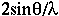
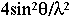

|
Basic Maths for Protein Crystallographers |
| Resolution |
|
|
The length of the reciprocal lattice vector
ha*+kb*+lc*
is called d* and equals
.
Crystallographers often define |S|² as (d*)² or
.
S, a vector, is defined as s-s0, where
s is in the direction of the scattered wave, and
s0 is in the direction of the incident wave.
Protein crystallographers talk about resolution in terms of 1/d* (or d), hence the 'high resolution'
limit is actually a small number.